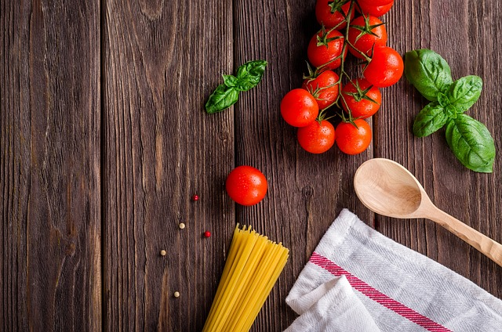

The DishSpaghetti is a flavorful dish that has spaghetti noodles cooked in a pot, with spaghetti sauce made separately. You combine the 2 items with some meatballs to create a very well-known and famous dish. Spaghetti came out with a 7/9 for a good score, but it was getting a little close to being average. |
 |
Taste RatingThe taste of spaghetti is a savory but slightly sweet flavor. The spaghetti sauce leads the dish in flavor, with the meatballs following behind. The flavor of spaghetti can be bland if it is done incorrectly; you need spices like oregano and garlic to really pull it together. I rate the flavor a 2/3, slightly below lasagna. |

|
Texture RatingThe texture of Spaghetti tends to have a looser sauce, with the meatballs and spaghetti noodles mixed in, giving it a solid texture to the food. Its balance in texture makes it enjoyable to eat; it’s just a little messy. I am giving it a score of 2/3, close but fell short. |
|
Presentation RatingThe presentation of Spaghetti is always satisfying, the sauce-covered noodles swirl around the plate with the meatballs on top. With parmesan on top of the dish, it makes it pop out more and makes it that much more tempting. Like pizza in this sense, it is typically consistent in its presentation and offers a nostalgic feel. I give it a 3/3; nothing beats a classic spaghetti. |

|